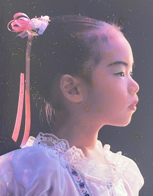

SPORTS
小さいころから体を動かすことが
好きでした。
今までに経験してきた
スポーツをご紹介します。
SWIMMING

水泳は、2歳のころからずっとやっているスポーツです。
今でも毎週日曜日に母校の温水プールで泳いでいます。陸にいるより水の中にいる方が好きだったりします（笑）
特に2歳～中学生まではスイミングスクールに通っていて、何度か選手コースに誘われたこともあるので、
泳ぎは得意な方だと思います。
小学生の頃に高校生男子の先輩に勝てたことは我ながら誇らしいです。
BALLET

小学生に入ってから卒業するまで、バレエを習っていました。
踊るのも好きだったのですが、先生方が面白い方だったので続けていた面もあります。
特に発表会では、ディズニーの曲に合わせて踊ったり、題材も「不思議の国のアリス」や「ピーターパン」がモチーフ
でトランプ役や海賊役などを与えられて踊れたので楽しかったです。
踊れるかはわかりませんが、いまでも開脚は180度開けます。
体が柔らかくなったのと、ダンスが好きになったのはバレエのおかげかなと思います。
VOLLEYBALL
バレーボールは小学3年生のころから中学卒業までやっていました。
ポジションは、全部やってきたのですが、特にリベロが多かったです。
相手スパイカーの強烈なスパイクをあげられたときの快感と、あの腕のジンとする痛み
は思い出しただけでも興奮します。
バレーボールは社会人になってから、体育館に行く機会もなくなりやる機会がなくなってしまったのですが、
もし体育館を借りられてまたできる機会があったらぜひもう一度してみたいです。